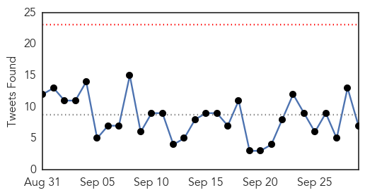
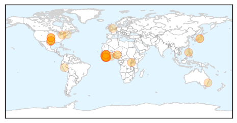

30 Day Trends
Web: 0 alerts, 0 warnings
Twitter: 0 alerts, 0 warnings
Top Articles:
- 1.000
- Ebola: NYC Had Jump-Start, Dallas Had to Learn Fast
- 0.999
- First US case of deadly Ebola virus confirmed in Dallas
- 0.999
- Health: Why are people afraid of Ebola?
- 0.999
- Philippine monkeys infected with Ebola not lethal to humans
- 0.998
- I watched a man die and could not do anything about it
- 0.998
- Ebola is back in West Africa
- 0.994
- Mandela's widow says Ebola wake-up call for Africa
- 0.988
- Health Workers Slowly Struggle To Win Guineans’ Trust To An Experimental Ebola Vaccine
- 0.980
- Dying to Live
- 0.978
- Presidents of Sierra Leone and Liberia outline post-Ebola recovery plan in addresses to UN Assembly
- 0.974
- Nigeria Contributes Highest Contingent To AU Ebola Support Team – FG
- 0.947
- The World Needs to Build on Its Success Against Malaria
- 0.926
- Pres. Ellen Johnson-Sirleaf Joins Clinton Global Initiative
- 0.892
- Apart from the BBC, here are five other news platforms that excelled in covering the Ebola outbreak
- 0.876
- Kids With Ebola Is Not a Happy Thought, But Texas Children's Hospital Is Ready
- 0.871
- Stand4Salone boosts post-Ebola recovery program
- 0.859
- Glasgow University open £23m virus research centre
- 0.856
- Nigeria: Last Batch of Ebola Volunteers Returns to Nigeria
- 0.852
- Time magazine’s ‘Person of the Year’ to address students – Vidette Online
- 0.835
- Helping to Build Liberia’s Resilient Health Sector
- 0.835
- Liberia: Helping to Build Liberia's Resilient Health Sector
- 0.818
- United States Of America : DuPont to unveil garment & help protect people from Ebola
- 0.810
- ‘Frontline’ virtual-reality doc takes viewers into heart of Ebola outbreak
- 0.795
- Want to Fight Ebola? Help Liberia Invest in Toilets.
- 0.781
- The first step toward stronger health systems
- 0.769
- Sierra Leone News, This is Sierra Leone,All about Sierra Leone and Sierra Leone News
- 0.769
- Ebola survivor thanks Pride of Britain winning medics for support in crisis
- 0.759
- Liberia has effectively beaten Ebola Virus-Minister
- 0.753
- Liberia: President Sirleaf Wants Health and Human Security Prioritized in the 2030 Agenda for Sustainable Development
- 0.752
- Drug-Resistant Tuberculosis Is a Global Crisis. Why Are We Doing So Little to Fight It?
- 0.715
- Liberia: 16 Countries Request Int'l Aid to Liberia's Socio-Economic Growth
- 0.704
- Liberia: Bestwa Identifies With Hospitals, Clinics
- 0.686
- VP Boakai: African leaders must find solutions to African problems
- 0.616
- Ex-ETUs workers accuse gov’t, but…
- 0.608
- FG receives last batch of Ebola Rescue Mission team
- 0.604
- The Aspen Institute, USAID, the MDG Health Alliance, GSK, and Partners In Health Announce Partnership to Strengthen Health Systems in Low- and Middle-Income Countries
- 0.595
- The Aspen Institute, USAID, the MDG Health Alliance, GSK, and Partners In Health Announce Partnership to Strengthen Health Systems in Low- and Middle-Income Countries
- 0.592
- Study shows that infectious diseases resist globalisation
- 0.514
- Ebola widow, 6 orphans sleep in mishit ‘cook shop’
Top Tweets:
- 0.817
- China Wins African Friends by Building Dam During Ebola Outbreak - Bloomberg http://t.co/sjF8OOr8cM ebola EVD
- 0.749
- Sierra Leone starts new countdown to Ebola-free status - Yahoo News http://t.co/Dpf98ZQa7f ebola EVD
- 0.682
- Sierra Leone released its last known Ebola patients and begins 42-day countdown to be considered Ebola-free http://t.co/TbQIbLxIL7
- 0.634
- US kicks in $7.2M for OraSure Ebola test - Allentown Morning Call http://t.co/RFFmELArH7 ebola EVD
- 0.566
- Want to Fight Ebola? Help Liberia Invest in Toilets. - Foreign Policy (blog) http://t.co/bK4t51bpxU ebola EVD
- 0.547
- Morning Break: Finding Rich Patients Ebola Fading? New Pesticide Regs - MedPage Today http://t.co/51WLUHpwo2 ebola EVD
- 0.534
- One year after Ebola Dallas adds chief resiliency officer - WFAA http://t.co/7NfOLODeLf ebola EVD
Web/News Articles

Tweets
Article Locations
Article Confidences